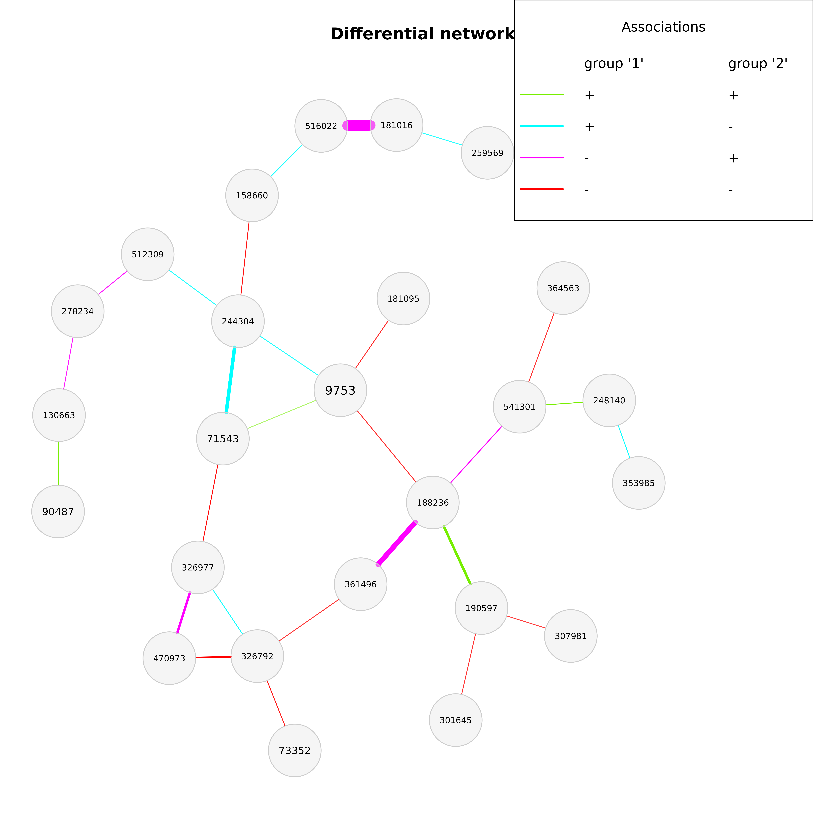

Constructs a differential network for objects of class
microNet. Three methods for identifying differentially associated
taxa are provided: Fisher's z-test, permutation test, discordant method.
Usage
diffnet(
x,
diffMethod = "permute",
discordThresh = 0.8,
n1 = NULL,
n2 = NULL,
fisherTrans = TRUE,
nPerm = 1000L,
permPvalsMethod = "pseudo",
cores = 1L,
verbose = TRUE,
logFile = NULL,
seed = NULL,
alpha = 0.05,
adjust = "lfdr",
lfdrThresh = 0.2,
trueNullMethod = "convest",
pvalsVec = NULL,
fileLoadAssoPerm = NULL,
fileLoadCountsPerm = NULL,
storeAssoPerm = FALSE,
fileStoreAssoPerm = "assoPerm",
storeCountsPerm = FALSE,
fileStoreCountsPerm = c("countsPerm1", "countsPerm2"),
assoPerm = NULL
)Arguments
- x
an object of class
microNet(returned bynetConstruct).- diffMethod
character string indicating the method used for determining differential associations. Possible values are
"permute"(default) for performing permutation tests according to Gill et al. (2010),"discordant", which callsdiscordantRun(Siska and Kechris, 2016), and"fisherTest"for Fisher's z-test (Fisher , 1992).- discordThresh
numeric value in [0,1]. Only used for the discordant method. Specifies a threshold for the posterior probability that a pair of taxa is differentially correlated between the groups. Taxa pairs with a posterior above this threshold are connected in the network. Defaults to 0.8.
- n1, n2
integer giving the sample sizes of the two data sets used for network construction. Needed for Fisher's z-test if association matrices instead of count matrices were used for network construction.
- fisherTrans
logical. If
TRUE(default), Fisher-transformed correlations are used for permutation tests.- nPerm
integer giving the number of permutations for the permutation tests. Defaults to 1000L.
- permPvalsMethod
character indicating the method used for determining p-values for permutation tests. Currently, "pseudo" is the only available option (see details).
- cores
integer indicating the number of CPU cores used for permutation tests. If cores > 1, the tests are performed parallel. Is limited to the number of available CPU cores determined by
detectCores. Defaults to 1L (no parallelization).- verbose
logical. If
TRUE(default), progress messages are shown.- logFile
a character string defining the name of a log file, which is created when permutation tests are conducted (therein the current iteration numbers are stored). Defaults to
NULLso that no file is created.- seed
integer giving a seed for reproducibility of the results.
- alpha
numeric value between 0 and 1 giving the significance level. Significantly different correlations are connected in the network. Defaults to 0.05.
- adjust
character indicating the method used for multiple testing adjustment for the tests for differentially correlated pairs of taxa. Possible values are "lfdr" (default) for local false discovery rate correction (via
fdrtool), "adaptBH" for the adaptive Benjamini-Hochberg method (Benjamini and Hochberg, 2000), or one of the methods provided byp.adjust.- lfdrThresh
defines a threshold for the local fdr if "lfdr" is chosen as method for multiple testing correction. Defaults to 0.2 meaning that correlations with a corresponding local fdr less than or equal to 0.2 are identified as significant.
- trueNullMethod
character indicating the method used for estimating the proportion of true null hypotheses from a vector of p-values. Used for the adaptive Benjamini-Hochberg method for multiple testing adjustment (chosen by
adjust = "adaptBH"). Accepts the provided options of themethodargument ofpropTrueNull: "convest" (default), "lfdr", "mean", and "hist". Can alternatively be "farco" for the "iterative plug-in method" proposed by Farcomeni (2007).- pvalsVec
vector with p-values used for permutation tests. Can be used for performing another method for multiple testing adjustment without executing the complete permutation process again. See the example.
- fileLoadAssoPerm
character giving the name (without extension) or path of the file storing the "permuted" association/dissimilarity matrices that have been exported by setting
storeAssoPermtoTRUE. Only used for permutation tests. Set toNULLif no existing associations should be used.- fileLoadCountsPerm
character giving the name (without extension) or path of the file storing the "permuted" count matrices that have been exported by setting
storeCountsPermtoTRUE. Only used for permutation tests, and iffileLoadAssoPerm = NULL. Set toNULLif no existing count matrices should be used.- storeAssoPerm
logical indicating whether the association (or dissimilarity) matrices for the permuted data should be stored in a file. The filename is given via
fileStoreAssoPerm. IfTRUE, the computed "permutation" association/dissimilarity matrices can be reused viafileLoadAssoPermto save runtime. Defaults toFALSE.- fileStoreAssoPerm
character giving the file name to store a matrix containing a matrix with associations/dissimilarities for the permuted data. Can also be a path.
- storeCountsPerm
logical indicating whether the permuted count matrices should be stored in an external file. Defaults to
FALSE.- fileStoreCountsPerm
character vector with two elements giving the names of two files storing the permuted count matrices belonging to the two groups.
- assoPerm
only needed for output generated with NetCoMi v1.0.1! A list with two elements used for the permutation procedure. Each entry must contain association matrices for
"nPerm"permutations. This can be either the"assoPerm"value as part of the output returned bydiffnetornetCompare. See the example.
Value
The function returns an object of class diffnet. Depending on
the performed test method, the output contains the following
elements:
Permutation tests:
diffMat | matrix with absolute differences of associations that are significantly different from zero; optional adjacency matrix |
diffAdjustMat | matrix with absolute differences of associations that are significantly different from zero (after multiple testing correction); optional adjacency matrix |
pvalsVec | vector with p-values |
pAdjustVec | vector with adjusted p-values |
pvalsMat | matrix with p-values |
pAdjustMat | matrix with adjusted p-values |
testStatData | vector with test statistics (absolute differences of associations) for the original data |
testStatPerm | matrix with test statistics (absolute differences of associations) for the permuted data |
assoMat1,assoMat2 | matrices with estimated associations (of the original data) |
Discordant:
assoMat1,assoMat2 | matrices with estimated correlations |
diffMat | adjacency matrix (absolute difference of correlations) |
classMat | matrix with classes assigned to a taxa pair |
diffProbs | matrix with posterior probabilities that a taxa pair is differentially correlated between the groups |
Fisher's z-test:
diffMat | matrix with absolute differences of associations that are significantly different from zero; optional adjacency matrix |
diffAdjustMat | matrix with absolute differences of associations that are significantly different from zero (after multiple testing correction); optional adjacency matrix |
pvalsVec | vector with p-values |
pAdjustVec | vector with adjusted p-values |
pvalsMat | matrix with p-values |
pAdjustMat | matrix with adjusted p-values |
assoMat1,assoMat2 | matrices with estimated associations (of the original data) |
Details
Permutation procedure:
The null hypothesis of these tests is defined as
$$H_0: a1_ij - a2_ij = 0,$$ where \(a1_ij\) and \(a2_ij\) denote the
association between taxon i and j in group 1 and 2, respectively.
To generate a sampling distribution of the differences under \(H_0\),
the group labels are randomly reassigned to the samples while the group
sizes are kept. The associations are then re-estimated for each permuted
data set. The p-values are calculated as the proportion of
"permutation-differences" being larger than the observed difference. A
pseudo-count is added to the numerator and denominator in order to avoid
zero p-values. The p-values should be adjusted for multiple testing.
References
Benjamini Y, Hochberg Y (2000). “On the adaptive control of the false
discovery rate in multiple testing with independent statistics.”
Journal of Educational and Behavioral Statistics, 25(1), 60–83.
Siska C, Kechris K (2016). discordant: The Discordant Method: A Novel
Approach for Differential Correlation. R package version 1.2.0,
https://github.com/siskac/discordant.
Farcomeni A (2007). “Some results on the control of the false discovery
rate under dependence.” Scandinavian Journal of Statistics,
34(2), 275–297.
Fisher RA (1992). “Statistical methods for research workers.”
Breakthroughs in Statistics, 66–70. Springer.
Gill R, Datta S, Datta S (2010). “A statistical framework for differential
network analysis from microarray data.” BMC Bioinformatics, 11, 95.
Examples
knitr::opts_chunk$set(fig.width = 10, fig.height = 6)
# Load data sets from American Gut Project (from SpiecEasi package)
data("amgut1.filt")
# Generate a random group vector
set.seed(123456)
group <- sample(1:2, nrow(amgut1.filt), replace = TRUE)
# Network construction:
amgut_net <- netConstruct(amgut1.filt, group = group,
measure = "pearson",
filtTax = "highestVar",
filtTaxPar = list(highestVar = 30),
zeroMethod = "pseudoZO", normMethod = "clr")
#> Checking input arguments ...
#> Done.
#> Data filtering ...
#> 97 taxa removed.
#> 30 taxa and 289 samples remaining.
#>
#> Zero treatment:
#> Zero counts replaced by 1
#>
#> Normalization:
#> Execute clr(){SpiecEasi} ...
#> Done.
#>
#> Calculate 'pearson' associations ...
#> Done.
#>
#> Calculate associations in group 2 ...
#> Done.
#>
#> Sparsify associations via 't-test' ...
#>
#> Adjust for multiple testing via 'adaptBH' ...
#> Done.
#> Done.
#>
#> Sparsify associations in group 2 ...
#>
#> Adjust for multiple testing via 'adaptBH' ...
#> Done.
#> Done.
#---------------------
# Differential network
# Fisher's z-test
amgut_diff1 <- diffnet(amgut_net, diffMethod = "fisherTest")
#> Checking input arguments ...
#> Done.
#> Adjust for multiple testing using 'lfdr' ...
#>
#> Execute fdrtool() ...
#> Step 1... determine cutoff point
#> Step 2... estimate parameters of null distribution and eta0
#> Step 3... compute p-values and estimate empirical PDF/CDF
#> Step 4... compute q-values and local fdr
#>
#> Done.
#> No significant differential associations detected after multiple testing adjustment.
# Network contains no differentially correlated taxa:
if (FALSE) { # \dontrun{
plot(amgut_diff1)
} # }
# Without multiple testing correction (statistically not correct!)
amgut_diff2 <- diffnet(amgut_net, diffMethod = "fisherTest", adjust = "none")
#> Checking input arguments ...
#> Done.
plot(amgut_diff2)

if (FALSE) { # \dontrun{
# Permutation test (permutation matrices are stored)
amgut_diff3 <- diffnet(amgut_net,
diffMethod = "permute",
nPerm = 1000L,
cores = 4L,
adjust = "lfdr",
storeCountsPerm = TRUE,
fileStoreCountsPerm = c("countsPerm1", "countsPerm2"),
storeAssoPerm = TRUE,
fileStoreAssoPerm = "assoPerm",
seed = 123456)
# Use the p-values again (different adjustment method possible), but without
# re-estimating the associations
amgut_diff4 <- diffnet(amgut_net,
diffMethod = "permute",
nPerm = 1000L,
adjust = "none",
pvalsVec = amgut_diff3$pvalsVec)
x11()
plot(amgut_diff4)
# Use the permutation associations again (same result as amgut_diff4)
amgut_diff5 <- diffnet(amgut_net,
diffMethod = "permute",
nPerm = 1000L,
adjust = "none",
fileLoadAssoPerm = "assoPerm")
x11()
plot(amgut_diff5)
# Use the permuted count matrices again (same result as amgut_diff4)
amgut_diff6 <- diffnet(amgut_net,
diffMethod = "permute",
nPerm = 1000L,
adjust = "none",
fileLoadCountsPerm = c("countsPerm1", "countsPerm2"),
seed = 123456)
x11()
plot(amgut_diff6)
} # }